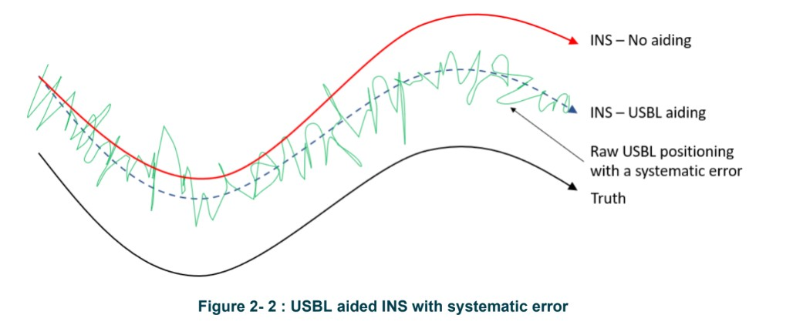

INS Theory and Principles¶
Purpose
Comprehensive reference covering the principles of Inertial Navigation Systems (INS) used in offshore survey operations. Covers the IMU, Kalman filtering, aiding methods, error characteristics, drift behaviour, timing requirements, installation considerations, sign conventions, and alignment procedures.
INS Principles¶
An Inertial Navigation System (INS) uses an Inertial Measurement Unit (IMU) consisting of a block of three gyroscopes and three accelerometers to measure its 3D acceleration vector at a very high rate (in the order of hundreds of observations per second). If the position and speed of the body are known at time zero, its position can be obtained onward by numerical integration.
The accelerometers and gyroscopes are extremely precise but have high drift rates and a scale bias. The drift must be mitigated by using external aiding methods or by frequently resetting the velocity to zero (called a ZUPT -- Zero Velocity Update).
Kalman Filter¶
The observations from the IMU and aiding sensors are combined in a Kalman Filter. The Kalman Filter:
- Estimates the current state from previous observations
- Updates this estimate with a weighted average of new measurements
- Uses sensor modelling algorithms, outlier detection algorithms, and rejection of data by sensor quality metrics to handle poor data
To initialise the INS, it needs a position input to start the algorithm (compared to an AHRS which only needs latitude). As a minimum, this could be a single start coordinate. Once initialised, the INS utilises the various aiding sources to determine its position and velocity.
The weighting applied to aiding sensors is typically an estimated error at a stated confidence level, such as 1 standard deviation or 95% CL.
Critical Concept: The INS Only Wants Good Data
The INS is the principal sensor in the Aided INS (AINS) algorithm. If an aiding sensor deviates too far from where the INS thinks it should be, the INS will reject it. The INS only accepts data that comes with acceptable quality flags from the instrument.
Aiding Methods¶
| Aiding | Use | Details | Limitations |
|---|---|---|---|
| GNSS | Surface | Loosely coupled: position and velocity. Tightly coupled: pseudoranges and Doppler | Surface only |
| DVL | Subsea | Loosely coupled: 3D speed over the seabed. Tightly coupled: individual beam velocities | Limited distance to seabed; ideally use SV sensor interfaced into DVL |
| USBL | Subsea | Independent position | Dependent on various sources of error which may affect accuracy |
| LBL | Subsea | Loosely coupled: position from LBL system. Tightly coupled: individual range measurements | Expensive to deploy; depends on SV and depth error mitigation |
| Depth | Subsea | Independent distance | Depends on tides, density, pressure-to-depth conversion |
| Altitude | Subsea | Independent distance | Depends on seabed characteristics |
| ZUPT | Surface or Subsea | Residual velocity correction when held stationary | Requires vehicle to be fully stationary; ZUPTs needed frequently |
Loosely vs Tightly Coupled Explained
Sources of aiding can be loosely coupled or tightly coupled:
- Loosely coupled GNSS uses the position and velocity estimates calculated by the GNSS receiver; tightly coupled uses satellite pseudoranges and Doppler observables
- Loosely coupled LBL uses the latitude and longitude computed by the LBL software; tightly coupled uses individual range measurements
- Loosely coupled DVL uses the computed XYZ velocities; tightly coupled uses individual beam velocities
Tightly coupled integration generally provides better performance as it gives the Kalman filter more raw information to work with.
DVL Aiding¶
For subsea applications, the INS is typically always aided by a DVL. The velocity information provided by the DVL significantly reduces INS drift. This is why it is critical to have a good DVL-to-INS alignment calibration.
Sound Velocity Sensor
It is recommended to have a sound velocity sensor (SVS) interfaced into the DVL to optimise its acoustic measurements. DVL data is improved by sound velocity correction, and the INS system handles this provided an SVS is interfaced into the system.
For a 1200 kHz DVL system, bottom lock is maintained between 0.3 and 30 m altitude. Lower frequency DVLs can extend the altitude range up to 200 m.
Depth Aiding¶
Depth (or altitude) aiding stabilises the vertical dimension of the INS. The INS operates in three dimensions, all of which need to be aided.
Sources of error in depth can come from:
- Not adequately accounting for tides
- Wrong parameters for gravity, density, or atmospheric pressure in the pressure-to-depth conversion equation
- Dynamic variability -- depth sensors are designed to be static and will show some variability in readings when dynamic (reduced when sensors are mounted vertically)
Pressure-to-Depth Conversion
INS systems typically offer multiple methods for pressure-to-depth conversion:
- Salt water: Uses the UNESCO formula from "Technical Papers in Marine Science No. 44"
- Fresh water / density formula: Can also be used for salt water by entering the mean density calculated from a CTD cast
- Atmospheric pressure compensation: Either enter a depth offset manually or use the current depth reading when the sensor is at the waterline before submersion. As a cross-check, the unit should read approximately 10 m depth before applying the atmospheric offset.
USBL Aiding¶
A USBL system is often used to aid the subsea INS with position information. The absolute positions are used by the INS to determine its errors, which are fed back into the algorithm to refine its position.
Critical Concept: USBL Aiding and Systematic Errors
Although an INS improves USBL system precision and short-term accuracy, it will not resolve any inherent systematic errors that are present.
Consider a subsea vehicle flying over a pipeline. The black line represents "truth" (where the pipeline actually is). The raw USBL has both random error (the spread of positions) and systematic error (the offset from truth). If the INS has only a starting position but then continues with no USBL aiding, it drifts. With USBL aiding, the INS will improve the precision of the USBL but cannot improve the absolute accuracy. It will smooth out the USBL positioning but cannot get the position any closer to truth.
In practice, when the INS is USBL-aided, it is also aided by a DVL and depth sensor. The INS weights the aiding sensors using any user-defined accuracy values. For USBL, the standard deviation is dependent on slant range and environmental factors (noise). A value between 0.2% and 0.5% of slant range is a realistic starting point.

LBL Aiding¶
Instead of USBL aiding, it is possible to aid the INS from Long Baseline (LBL) subsea transponders.
Loosely coupled LBL (using latitude/longitude output from LBL software) is rarely done offshore due to latency -- not just processing time, but also determining when ranges were sent and received for each position update.
Tightly coupled range-aided INS is the standard approach. The acoustic signals are accurately synchronised with INS time for both interrogation and reply. The INS accounts for the trajectory between interrogations and replies, providing tighter integration.
Range-aided INS can be used in:
- A traditional LBL array with 4+ ranges
- Sparse LBL with as few as 1 range
Sparse LBL
Sparse LBL is often described as "just like LBL but with fewer transponders." This is misleading -- it should be considered a very different type of positioning system. Personnel involved in planning and operation of range-aided INS should understand what factors are important for successful operation and, perhaps more importantly, what factors can negatively impact its performance.
Systematic vs Random Errors¶
This is one of the most important concepts for understanding INS performance.
- Random errors follow a normal distribution and affect precision
- Systematic errors shift the mean of the distribution and affect accuracy
| Error Type | INS Behaviour | Implication |
|---|---|---|
| Random errors | INS is very good at accounting for these. The Kalman filter constantly refines its state by analysing the difference between an aiding measurement and its expected value. The INS has the effect of smoothing the aiding sensors. | INS effectively improves the precision of aided position/depth input |
| Systematic errors | It is not possible for the INS to identify systematic errors. There is no mechanism whereby the INS can identify where truth is. | INS cannot improve the absolute accuracy of aided position/depth input |
Key Takeaway
Users must:
- Apply the correct weighting to aiding sensors
- Mitigate systematic errors as far as possible through calibration of aiding sensors such as USBL and DVL
The INS will smooth imprecise data effectively, but it cannot fix data that is consistently offset from truth.
INS Applications¶
Seabed Positioning¶
The INS is aided by USBL position or LBL ranges, DVL, and depth information. The ROV needs to be at an altitude where the DVL has bottom lock. Applications include:
- Pipeline and umbilical surveys
- Structure installation
- Out of Straightness (OOS) surveys
- Spoolpiece metrology (using Simultaneous Localisation and Mapping)
OOS Surveys
OOS surveys address a specific problem: determining the relative position along a segment of pipeline (e.g. 100 metres). A combination of INS and DVL is particularly suited for this as the combination is very precise, although not absolutely accurate. For applications requiring absolute positioning, USBL or LBL aiding is introduced.
Mid-Water Positioning¶
The INS is aided by USBL and depth information (e.g. from high-accuracy Digiquartz or MiniIPS depth sensors). Applications include:
- Jacket inspection
- Catenary checks of anchor wires, flowlines, or umbilicals
- Structure monitoring during deployment through the water column
Note
Without the DVL, the INS will be more likely to drift and will require regular position aiding updates.
Drill String Monitoring¶
The INS unit is mounted on a tool designed to run down the outside of a drill string. The procedure starts with the tool docked on the vessel (aided by DGNSS, possibly vessel gyro and motion sensors), then run down the drill string, held stationary at the bottom for ZUPT, and returned to the surface. This is repeated 3-10 times to provide an accurate position of the well head.
INS Performance¶
ITAR Restrictions and Sensor Quality¶
The gyroscopes and accelerometers inside the IMU can be of different quality. The higher the quality, the better the INS performance.
Very high-quality sensors come under International Traffic in Arms Regulations (ITAR) and can be prohibitively problematic to ship and use for offshore operations. INS instruments used offshore have performance that falls within the criteria allowing them to be shipped. It is these regulations that limit the quality of INS sensors used offshore.
Gyroscope Technology Comparison¶
| Technology | Abbreviation | Typical Bias Stability | Typical Applications | Cost |
|---|---|---|---|---|
| MEMS (Micro-Electro-Mechanical Systems) | MEMS | 1-10 deg/hr | Low-cost navigation, consumer devices, some survey-grade AHRS | Low |
| Fibre Optic Gyroscope | FOG | 0.001-0.1 deg/hr | Offshore survey INS (e.g. Exail PHINS, ROVINS), high-accuracy navigation | Medium-High |
| Ring Laser Gyroscope | RLG | 0.001-0.01 deg/hr | Military/aerospace, highest-grade INS; rarely used offshore due to ITAR and cost | High |
Offshore Survey Context
The majority of INS systems used in offshore survey are FOG-based. These provide the best balance of performance and exportability. MEMS-based systems are increasingly capable but currently do not match FOG performance for subsea survey applications. RLG systems, while superior in raw performance, are generally restricted by ITAR and not commonly deployed offshore.
INS Drift Rates¶
| Condition | Drift Rate | Notes |
|---|---|---|
| Unaided | ~12 m over 4 minutes | Drift rate increases over time (accelerating divergence) |
| DVL-aided | 0.02%-0.06% distance travelled | Equivalent to 0.2-0.6 m per 1 km travelled. These figures are typically empirical from trial data and represent best-case scenarios |
Drift Behaviour
If aiding sensors are not coming into the INS, or the INS is rejecting them for any length of time, the INS can be observed to run off, rapidly increasing its velocity and distance from the initial position. The rate of drift increases over time -- this is not linear.
INS drift is a function of both distance travelled and time:
- When dynamic: drift is primarily affected by DVL misalignment to the INS (the DVL calibration)
- When static: drift is primarily affected by DVL performance
USBL-Aided INS Performance¶
For USBL-aided INS, the performance affects how well the precision of the raw USBL is improved. The INS cannot improve the absolute accuracy of the USBL.
Range-Aided INS Performance¶
Range-aided INS has several considerations. It is often termed "sparse LBL" and the impression given is that it is just like LBL but with fewer transponders. This is misleading -- it should be considered a very different type of positioning system.
Timing Requirements¶
INS systems are more suited to being dynamic, compared to AHRS systems that are more suited to being static. It is imperative that the timing of aiding sensors is synchronised with INS time.
Time Synchronisation¶
The INS will typically be synchronised to GNSS time using a 1PPS and ZDA string. This allows:
- Time-stamped aiding data to be correctly applied to the INS
- Resulting position, velocity, and orientations to be merged with external sensors such as multibeam echosounders and laser systems
Latent Data
The INS can deal with latent data (up to a few seconds in real time) if there are correct timestamps in the data. Both the ZDA string and PPS should come from the same GNSS system and source as other survey instruments, typically distributed via an RTS PPS panel or serial splitter.
DVL Triggering¶
The DVL is set to free-running by default -- it sends a set of pings and when it receives the replies sends the next set. To improve timing, the INS can trigger the DVL. This option is configured in the topside software and relies on a direct connection between the INS and DVL.
LBL Range Timestamping¶
For range-aided INS (e.g. Sonardyne systems), the acoustic transceiver is interfaced directly into the INS. The range measurement interrogation and receive times are timestamped by the INS, allowing very accurate timing of this data.
Installation Checklist¶
The general installation sequence:
Installation Steps
- Pre-mobilisation checks
- Pre-installation checks
- Physical installation
- Offset measurements
- Hardware system configurations
- Communications checks
- Navigation software configuration
- Acquisition software configuration
Pre-Mobilisation Checks¶
Before committing equipment to a project, maintenance and factory pre-calibration certification should be checked against the recommended validity period (typically 1 year).
Workshop checks before mobilisation:
- All cables supplied, including a deck-test cable
- All connectors checked for corrosion; all interface cables verified
- Visual check of units for possible water ingress
- Connect systems and check power and communication lines
- Check firmware on all systems; update to latest version if advised by manufacturer
INS with DVL Pre-Mobilisation¶
Check equipment against manifest. Take pictures of the state of all equipment received. Minimum checks:
- INS and DVL are firmly connected together and will remain so throughout deployment
- DVL transducers are clean and undamaged
Mounting Considerations¶
- DVL transducers must have an unobstructed view downwards meeting the manufacturer's recommended clearance requirements
- System must not obstruct other sensors (cameras, sonar, pipe-tracker)
- Must not cause interference with other sensors (e.g. existing DVL on the same frequency)
- INS system forward axis should be aligned as closely as possible to one of the ROV vehicle axes, preferably forward
- DVL should be directly interfaced into the INS to avoid uncontrollable latencies through a network or other devices
Dedicated Network
Due to bandwidth and latency considerations, the INS system should operate on a dedicated ethernet network separate from the main survey network.
Pre-Calibrated Coupled Systems¶
Unless unavailable in the market, an INS/DVL system should always be supplied as mechanically coupled and pre-calibrated because calibration offshore is inevitably going to be less accurate than what a supplier can achieve near shore.
Tip
DVL offsets are predefined on coupled units and must not be changed. Any pre-calibrated INS/DVL will come supplied with a calibration file that can be transferred to the INS if settings are reset.
Sign Conventions¶
Care should be taken when entering lever arms into INS systems as the sign and naming conventions may differ from that of the navigation system.
Exail (ROVINS / PHINS) Convention¶
| Standard Convention | Exail Convention |
|---|---|
| Starboard | Negative XV2 = LV2 |
| Forward | XV1 = LV1 |
| Up | XV3 = LV3 |
In plain terms:
- LV1 is entered positive forward
- LV2 is entered positive port (opposite of normal survey convention)
- LV3 is entered positive up
Pitch Sign Reversal
With ROVINS or PHINS, the pitch sign convention is reversed compared to standard survey convention. In Exail (iXblue) systems, positive pitch = bow up. Standard survey convention typically defines positive pitch as bow down. This is critical to account for when integrating with navigation software -- a sign error in pitch will cause depth errors that increase with distance from the transducer nadir.
The primary lever arm is the primary external monitoring point (with respect to the INS centre of measurements) for calculation and output of position and attitude data to the online navigation system. Offset values are entered from the INS measurement point to the reference point using Exail sign convention.
Sonardyne (SPRINT) Convention¶
| Standard Convention | Sonardyne Convention |
|---|---|
| X (+Starboard) | Y (+Starboard) |
| Y (+Forward) | X (+Forward) |
| Z (+Up) | Z (+Down) |
In plain terms:
- Y is entered positive starboard
- X is entered positive forward
- Z is entered positive down
Coordinate Reference Frames
Sonardyne SPRINT systems use multiple coordinate reference frames. For the typical user, INS and aiding sensor offsets are entered using the vehicle coordinate reference frame (based on the ROV CRP). Internally, the IMU coordinate reference frame is used for DVL-to-IMU misalignment during pre-calibration. The topside software reads the internal offsets and displays them in the vehicle coordinate reference frame.
Alignment¶
Coarse Alignment (Exail Systems)¶
On power-up, the INS system needs to be stationary on deck. Offsets from the deck location to the vessel CRP are measured and entered into the navigation system.
The system will:
- Run through a self-check
- Perform coarse alignment to settle and detect the earth rotation axis to align its coordinate frame with true north
- During coarse alignment, the online navigation system provides GNSS position of the deck location
Fine Alignment (Exail Systems)¶
During fine alignment, the INS continues to self-tweak settings of internal sensors and aiding inputs into the Kalman filter to optimise performance. Aiding sensors should be available, so for subsea applications this is done in the water.
Fine alignment takes a few tens of minutes but can be improved by making a series of heading changes in different directions:
- A figure-of-8 pattern is highly recommended
- A stair pattern is a practical alternative on an ROV
- Other patterns such as a clover-leaf can also be used
Alignment Completion
With Exail systems, the INS software will inform when fine alignment is completed by displaying when the predicted heading accuracy matches the instrument specification.
Sonardyne Systems¶
A major difference with Sonardyne INS systems is that there is no requirement to provide an on-deck position prior to going subsea. This is because SPRINT systems run INS and AHRS algorithms concurrently:
- The AHRS does not need dynamics to compute heading, pitch, and roll
- The AHRS takes 10 minutes to settle upon start-up
- Once the INS algorithm is started, it takes the accurate AHRS data as starting values
When the INS algorithm is started, there is no need to perform alignment manoeuvres. The SPRINT statistics window in the software can be used to monitor the quality of the INS solution.
Quick Reference Summary¶
| Topic | Key Value |
|---|---|
| IMU components | 3 gyroscopes + 3 accelerometers |
| Unaided drift | ~12 m over 4 minutes (accelerating) |
| DVL-aided drift | 0.02%-0.06% distance travelled |
| Free inertial drift (20 min) | Highly variable -- drift is non-linear and accelerates; do not extrapolate linearly from short-duration figures |
| DVL bottom lock (1200 kHz) | 0.3-30 m altitude |
| DVL bottom lock (low freq.) | Up to 200 m altitude |
| USBL SD estimate | 0.2%-0.5% of slant range |
| Pre-cal validity period | Typically 1 year |
| AHRS settling time (Sonardyne) | 10 minutes |
| INS time sync | 1PPS + ZDA from same GNSS source |
Health Monitoring¶
Continuous monitoring of INS health during operations is essential. The following indicators should be checked regularly:
Kalman Filter Status¶
- Innovation sequence (the difference between predicted and actual measurements) should remain within expected bounds. Large or growing innovations indicate the filter is struggling to reconcile sensor data
- Residuals should be small and randomly distributed. Systematic patterns in residuals indicate unmodelled errors (e.g. DVL misalignment, incorrect lever arms)
- Filter covariance values indicate the estimated uncertainty of each state. Rapidly growing covariance means the filter is losing confidence -- check that aiding sensors are being accepted
Aiding Sensor Status¶
| Check | What to Look For |
|---|---|
| DVL bottom lock | Verify DVL has continuous bottom lock; loss of bottom lock means loss of velocity aiding |
| USBL acceptance rate | Monitor how many USBL fixes are accepted vs rejected by the INS. High rejection rate suggests USBL accuracy is worse than expected or lever arms are incorrect |
| Depth sensor | Confirm depth readings are stable and consistent with expected values |
| GNSS (surface) | Verify GNSS is being accepted; check that the PPP/DGNSS solution is converged |
Warning Signs¶
- INS position diverging from USBL when DVL bottom lock is lost
- Heading uncertainty growing beyond specification
- Velocity residuals consistently in one direction (indicates DVL misalignment)
- Depth residuals drifting (indicates pressure sensor drift or incorrect density parameters)
When to Use¶
- INS mobilisation -- reference for system installation, configuration, and alignment
- Calibration planning -- understand DVL-INS alignment requirements and pre-calibration validity
- Operations -- real-time health monitoring guidance and troubleshooting during survey operations
- Training -- foundational reference for surveyors working with INS systems for the first time
- System selection -- compare gyroscope technologies and understand ITAR implications for equipment procurement
Acceptance Criteria¶
| Parameter | Threshold |
|---|---|
| DVL-aided drift | < 0.1% of distance travelled |
| Heading accuracy (after alignment) | Per instrument specification (typically < 0.1 deg secant latitude for FOG systems) |
| Pitch and roll accuracy | Per instrument specification (typically < 0.02 deg for FOG systems) |
| DVL calibration residuals | < 0.05 deg misalignment on all axes |
| USBL acceptance rate | > 80% of USBL fixes accepted by the INS |
| Kalman filter innovations | Within 3-sigma bounds for all aiding sensors |
| Pre-calibration certificate validity | Within 1 year of calibration date |
| Time synchronisation | 1PPS and ZDA from same GNSS source; latency < 1 ms |
Troubleshooting¶
| Symptom | Likely Cause | Action |
|---|---|---|
| INS drifting rapidly when subsea | DVL has no bottom lock | Check altitude; verify DVL is functioning; ensure SVS is interfaced |
| INS rejecting USBL fixes | USBL accuracy worse than expected, or incorrect lever arms | Check USBL calibration; verify lever arms in INS configuration; increase USBL SD weighting |
| Heading not converging during alignment | Insufficient dynamics or incorrect start position | Perform figure-of-8 or stair pattern; verify start coordinates are correct |
| Velocity residuals biased in one direction | DVL-to-INS misalignment | Re-run DVL calibration; check that the pre-cal file is loaded correctly |
| Depth aiding rejected | Incorrect pressure-to-depth parameters | Verify density, atmospheric pressure, and tide settings; re-check depth sensor offset |
| Position jumps when USBL is re-acquired after gap | INS drifted during USBL outage; large correction applied | This is expected behaviour; longer USBL gaps produce larger jumps. Ensure DVL aiding is continuous to minimise drift |
| System fails to initialise on deck | No GNSS position provided, or system not stationary | Provide a GNSS position to the INS; ensure the system is completely stationary during coarse alignment |
Related Articles¶
- GNSS Fundamentals -- GNSS augmentation systems used for surface aiding
- MBES Installation and Setup -- tightly coupled INS/MBES configurations